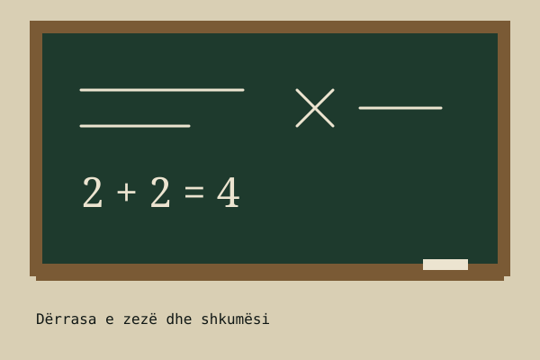
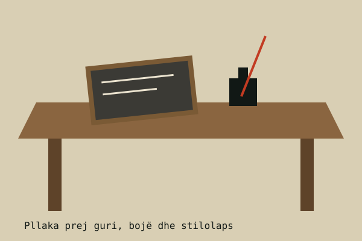
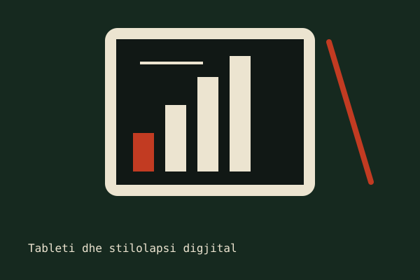
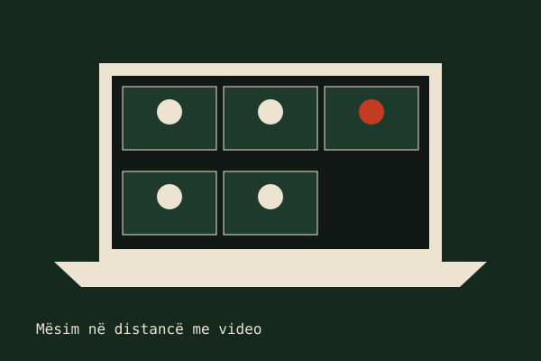

Për shekuj me radhë, mësimi varej nga fjala e mësuesit, nga libri dhe nga dërrasa e zezë. Nxënësit shkruanin me bojë e penë, kujtonin përmendësh dhe llogarisnin me abak ose me llogaritës të thjeshtë. Njohuria rrinte në pak libra dhe në shumë përsëritje.
Sot klasa ka dalë përtej katër mureve. Nxënësit hyjnë në platforma mësimore, ndjekin mësime në video, kryejnë detyra në internet dhe përdorin pajisje që në vitet '90 dukeshin fantazi. Pandemia e vitit 2020 e shpejtoi këtë ndryshim në mënyrë të pazakontë.
Kjo faqe ndahet në katër pjesë: e shkuara me metodat pa teknologji, e ardhmja me mësimin me teknologji, statistika të ndërveprueshme dhe një falënderim në fund.


Mësuesi ishte burimi kryesor i dijes. Nxënësit kopjonin nga dërrasa në fletore, shkruanin me penë e bojë dhe merrnin vlerësim vetëm në shkollë.
Libri i shtypur ishte i rrallë dhe shpesh përbashkët. Detyrat bëheshin me dorë, dhe mësimi ishte i njëjtë për të gjithë, pa dallim ritmi.


Sot nxënësi mëson me platforma të personalizuara, me burime të hapura dhe me detyra që vlerësohen menjëherë. Mësuesi bëhet më shumë udhëzues sesa burim i vetëm.
Inteligjenca artificiale, realiteti i shtuar dhe mësimi hibrid po e bëjnë klasën më të përfshirë, por kërkojnë edhe kujdes për shëndetin, vëmendjen dhe barazinë e qasjes.
Shifrat janë të rrumbullakosura dhe vijnë nga seritë publike të ITU (Bashkimi Ndërkombëtar i Telekomunikacionit) dhe UNESCO.
Faleminderit mësuesve tanë, shkollës sonë dhe çdokujt që na dha kohën dhe vëmendjen për të lexuar këtë projekt.